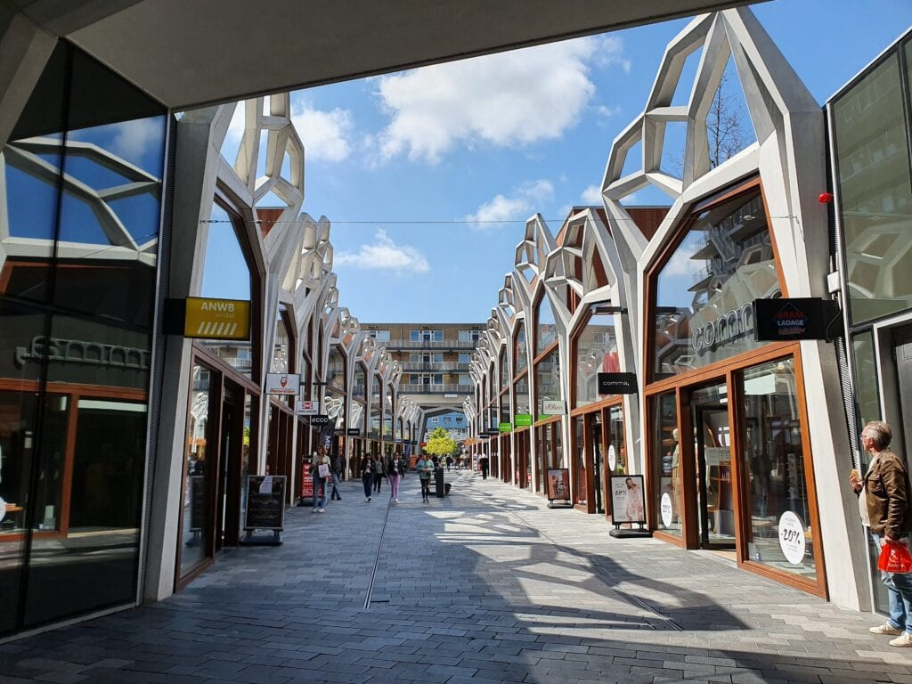
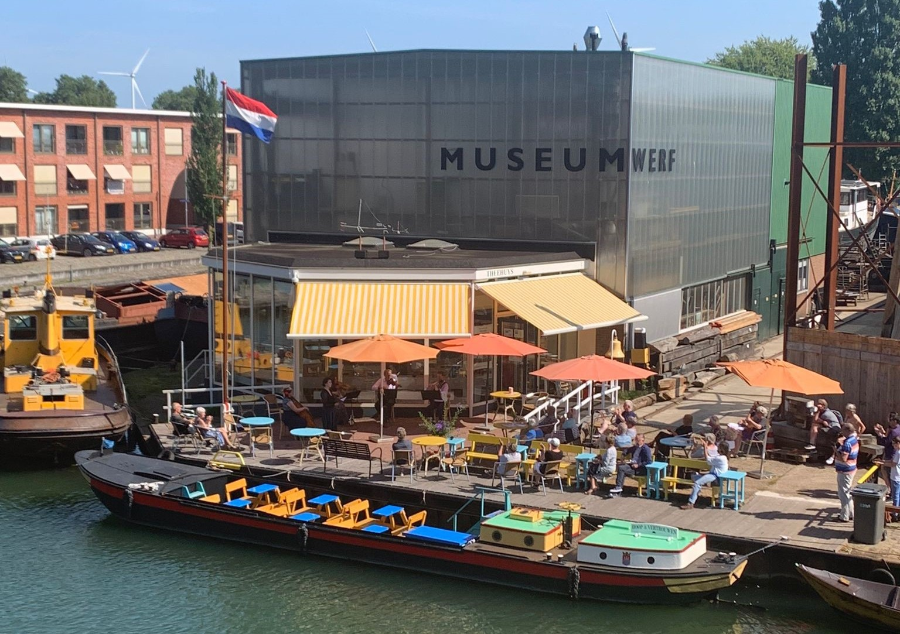

Feitjes over Nieuwegein
 In Nieuwegein is een heel groot winkelcentrum genaamd: City Plaza. Hier zijn erg veel winkels en restaurants.
 Museumwerf Vreeswijk is een plek waar allerlei dingen over scheepvaart te bewonderen zijn. Het is een soort museum.